Atlas
100 tons · Inner Sphere · 28 variants · 2755 to 3140

Kerensky wrote the brief himself. Not a committee, not a procurement office. In 2755, in the middle of the Cameron Edicts, the commanding general of the SLDF asked for a machine as powerful and impenetrable as could be built and as ugly and foreboding as anyone could conceive, so that fear would be doing half the work before a shot was fired.
Here is the part that still makes me uncomfortable when I am up to my elbows in one. It was not built for an enemy. The Star League's own member states were arming themselves, and the Atlas was meant to remind them who was in charge. The most recognisable war machine in history was designed to intimidate its own side.
They spent a full year on the head alone. Not the guns, not the engine. The head, getting the balance right between a working cockpit and a skull that would make a veteran sweat. It is roomy in there too. There is a folding satellite dish tucked inside for surface-to-space work, and you stow it before anyone starts shooting.
What you have actually got. A hundred tons on a Foundation Type 10X frame, a Vlar 300 in the chest, nineteen tons of Durallex Special Heavy over the top, and a cruising speed of about thirty-two kilometres an hour. It does not catch anything and it does not escape anything. What it does is arrive, and then decide how the afternoon goes.
And here is the one that actually gets people killed. Every Atlas ever built carries the same armour, all 28 of them. What changes is the engine, and more to the point where they put it.
The original carries a standard fusion engine and the whole thing sits in the chest. Blow a side torso clean off an AS7-D and it keeps walking, because there is nothing vital in there. An extralight engine gets you the same power for half the weight, and the way it manages that is by running the other half of itself out through the side torsos. Take one of those and the engine is finished, and so is the pilot.
The weight that saves is not small, and it is what pays for the Gauss rifles, the extended range lasers and the ECM on the later fits. That is the trade: about ten tons of engine swapped for bigger guns and a machine that dies to one good side torso hit instead of shrugging it off. 14 of the 28 took that deal. From the front you cannot tell which is which.
Why it earns its tonnage
Pull the panels off one and the first thing you notice is that almost nothing on it is subtle, and that is deliberate. Kerensky wanted the weapons visible. Not efficient, not tidy, visible. A machine you can see is coming to kill you is a machine that might not have to.
The FarFire Maxi-Rack on the left shoulder is a twenty-tube launcher that is not actually twenty tubes. They could not fit them, so it cycles the missiles out in waves of five across about ten seconds. First time you watch one fire you think something has jammed. It has not. That is just how it works, and the bay underneath holds two hundred and forty rounds, which is twelve full salvos and no more.
The Defiance 'Mech Hunter AC/20 is the reason anyone respects the machine and it is also the part I swear at most. Ten rounds in the magazine. No cooling jacket. Somebody in the design office decided the weight was better spent elsewhere, so the barrel assembly runs hot and you learn to hear it.
Four Defiance B3M mediums, and this is the bit that catches people out: two of them face backwards. They are there to discourage anything that fancies its chances behind you, which at walk three is a reasonable worry. Then a TharHes Maxi six-rack with fifteen reloads for the close work.
And the thing every new pilot asks about. There is an aperture between the missile launchers that looks exactly like a gun port. It is not. It is an omnicoupling, power and coolant lines, and the number of people who have asked me what calibre it is would surprise you.
Two more things worth knowing. Nineteen tons of Durallex, laid on heaviest across the front chest and the legs, because the design assumes you are walking straight at the problem. And it has hands. Real hand actuators, on a hundred ton machine. There are enough accounts of Atlases picking up mediums and throwing them that I am inclined to believe some of them.
The engine question, which is the whole argument
Armour is what stops the first hits, and every Atlas has the maximum. What differs is how much punishment the frame underneath will take once that armour is gone, and that comes down to where the engine lives.
| Engine | Where it sits | Lose a side torso | Frame rating |
|---|---|---|---|
| Standard fusion | All in the chest | Keeps walking and keeps shooting | 8 |
| Light fusion | Mostly chest, some in the sides | Survives it, hurt | 5 |
| Extralight | Half of it in the side torsos | Engine gone, machine gone | 4 |
Every Atlas looks identical from the front. The 14 standard-engine variants do the job the silhouette promises. The rest bought reach, electronics or speed with the survivability, and against anything that can concentrate on a side torso they are a very expensive heavy. Worth noting Kerensky never specified CASE on the D either, so the original has an ammunition problem the later Combine fits went and fixed. If you want the modern guns without the modern risk, the light engine fits, the AS7-S2 and AS7-S3, are the compromise worth making.
Six hundred years of history
It first went to war in the Amaris Civil War, and it did the job it was built for. Everyone knows Kerensky kicked in the Usurper's palace doors, and everyone remembers he did it in an Orion. Fewer people remember who got him to the doors. That was Aaron DeChavilier, Kerensky's own friend, who walked an Atlas through the fire and broke the wall around the complex so the rest could follow. He died later in the Pentagon Worlds, killed by rebels, which is not the ending you would write for him.
Then comes the part I find genuinely strange. After a war like that, Kerensky wanted every Atlas going with him on Operation EXODUS. Of the MechWarriors who told him no and stayed behind, two thirds of them were Atlas pilots. Make of that what you like. The machine built to keep the member states in line ended up in the hands of people who would not follow the man who commissioned it.
Those machines scattered across the Successor States, and the lines on Al Na'ir, Hesperus II and Quentin kept turning them out right through the Succession Wars. Most commanders would not touch the design. When the Helm Memory Core turned up and everyone else was rebuilding their old designs with recovered tech, the Combine finally produced the AS7-K in 3049, which landed in service just in time for the Clans to arrive.
And then look where it finished up. In the Star League era the D was issued to Rim Worlds Republic - Terran Corps, Star League units generally. By the ilClan era the only people listed as fielding one are Periphery forces.
Six centuries from SLDF flagship to Periphery salvage. Not because it stopped working. Because everyone who could build something newer did, and the old ones kept getting patched, scavenged and handed down until they ended up with whoever could still keep one running. It says something that they are still running at all.
How these are rated
Every verdict below is against other Atlases available in the same era, not against the rest of the game. Whether a hundred tons is the right thing to bring at all is a separate question.
Nothing in its era does the chassis's job better for the money.
Does the job competently. Another variant does it better or cheaper, but there is no reason to avoid this one.
Only earns its Battle Value if you specifically need what it carries. C3, stealth, a command console, flak, jump jets.
Another variant in the same era, at no more than 3 percent above its Battle Value, matches or beats it on every Alpha Strike damage band, on armour, on structure, and carries every special ability it has. Nothing gained, something lost, no dearer.
Only the Trap tier is calculated. It is worked out from the variant data rather than decided by me, which means it is falsifiable: to argue with it you only have to name something the cheaper machine gives up. The other three are my opinion and you should treat them that way. 2 of the 28 Atlas variants fail the Trap test. The full rating scale is here, including what it deliberately does not measure.
The variants worth arguing about
All 28 are in the table further down. These are the ones that change how the machine plays.
AS7-D: still the answer
Worth it100 tons · BV 1897 · PV 52 · Juggernaut · 2755
Walk 3 / Run 5 / Jump 0 · 20 Single · 300 Fusion Engine
4x Medium Laser, 1x LRM 20, 1x SRM 6, 1x AC/20
The original and still the answer. AC/20, LRM 20, SRM 6, four mediums, standard engine, and more armour than anything else on the field. Nothing here is clever. That is the point. Every commander who fields an Atlas for the first time fields a D, and most of them should keep fielding it.
AS7-K: where it starts arguing with itself
Trap100 tons · BV 2175 · PV 45 · Sniper · 3049
Walk 3 / Run 5 / Jump 0 · 20 Single · 300 XL Engine
2x ER Large Laser, 1x Anti-Missile System, 1x LRM 20, 1x Gauss Rifle, 2x Medium Pulse Laser
The Helm Memory Core Atlas, built by the Combine in 3049 and in service just as the Clans arrived. An Imperator Dragon's Fire Gauss where the autocannon was, Victory Nickel Alloy ER larges in the arms, and CASE in the side torsos at last. It is also where the chassis starts arguing with itself: the Vlar XL takes the structure from 8 down to 4. They kept twenty single heat sinks too, so working both lasers hard will cook you. Beaten outright by the AS7-C, which costs 12 less BV and gives up nothing it carries.
AS7-S: the D brought forward properly
Worth it100 tons · BV 1929 · PV 52 · Juggernaut · 3050
Walk 3 / Run 5 / Jump 0 · 15 IS Double · 300 Fusion Engine
4x Medium Laser, 1x LRM 20, 1x SRM 6, 2x Streak SRM 2, 1x AC/20
The FedCom upgrade: five heat sinks removed and the rest made double, the weight spent on two rear-firing Streak 2s. Crucially the standard engine stays, so structure 8. They stopped building them after the civil war and both halves kept using them anyway, which is the best review a machine can get.
AS7-S3: the best modern fit
Worth it100 tons · BV 2378 · PV 54 · Sniper · 3062
Walk 3 / Run 5 / Jump 0 · 14 IS Double · 300 Light Engine
2x PPC, 3x Small Laser, 1x Anti-Missile System, 1x LRM 15, 1x Gauss Rifle
PPCs, Gauss, anti-missile, ECM, light engine. The most defensively complete Atlas ever built and the damage is there across every band. If your era allows it, this is the one.
AS7-K3: a hundred tons that jumps
Worth it100 tons · BV 2346 · PV 45 · Sniper · 3083
Walk 4 / Run 6 / Jump 3 · 10 IS Double · 400 XL Engine
2x ER Large Laser, 1x Gauss Rifle, 1x Streak SRM 4
They pulled the Streak 6 racks off a K2 and put three jump jets in the hole. A hundred tons that jumps changes where an Atlas can stand and what it can threaten, and that is worth more than the numbers suggest. The XL engine is still the risk it always was.
AS8-S: the late-era gun
Worth it100 tons · BV 2789 · PV 56 · Sniper · 3138
Walk 3 / Run 5 / Jump 0 · 16 IS Double · 300 XL (Clan) Engine
2x ER Large Laser, 1x Streak SRM 6, 1x LRM 5, 2x ER Medium Laser, 1x Improved Heavy Gauss Rifle
An Improved Heavy Gauss Rifle, ECM, and the best damage numbers of any Atlas across every range band. A Clan XL keeps the structure at five rather than four. The best late-era Atlas there is.
AS8-KE: the sensible late one
Worth it100 tons · BV 2658 · PV 53 · Juggernaut · 3140
Walk 3 / Run 5 / Jump 0 · 12 IS Double · 300 Fusion Engine
2x ER Large Laser, 1x MML 5, 1x Gauss Rifle
The AS8-K's sensible cousin: standard fusion engine, full structure, and it gives up almost nothing in damage to get it. If you want a late Atlas that still soaks like an Atlas, this is it.
AS7-A: five launchers and a prayer
Situational100 tons · BV 1787 · PV 52 · Juggernaut · 2954
Walk 3 / Run 5 / Jump 0 · 20 Single · 300 Fusion Engine
2x Medium Laser, 5x SRM 6, 1x LRM 10, 1x AC/5
Capellan, 2944, five Ceres Arms six-racks and a Deleon 5 where the big gun should be. Terrifying inside three hexes and useless outside them. They built it twelve years before they lost their last Atlas factory, which tells you something about how the Confederation was doing.
On the table
Piloting one. You are not catching anything and you are not escaping anything, so stop trying. Pick the ground you want the fight to happen on and make the enemy come to it, because they usually have to. Objectives, chokepoints, the line your lighter machines are standing behind. Walk, do not run, unless you have a reason: run five gets you one extra hex and costs you accuracy you cannot spare at a hundred tons.
Fighting one. Do not stand in front of it. Inside the AC/20's reach, an Atlas will take a limb off something the size of a Warhammer in a turn. Stay at long range where it only has the LRM 20 and grind it down, or get behind it, because walk three means it turns slowly and the rear armour is the thinnest thing on the machine. Against any of the XL fits, concentrate on a side torso and the fight ends early.
What I see go wrong. People push an Atlas forward alone because it feels invincible, and it is not, it is just slow to die. An unsupported Atlas gets circled by two mediums and taken apart from behind over six turns. It is an anchor for a line, not a line on its own.
Against OpFor Command
Worth knowing if you run solo games with our AI opponent. The Atlas is unusual in that it splits almost evenly between two very different role tags, so which variant you field changes the game completely.
- Juggernaut fits, including the AS7-D itself, get short range weighting and the strongest aggression modifier in the engine. They come straight at you and they do not stop.
- Sniper fits like the AS7-K, AS7-S2 and AS8-S get long range weighting and a negative aggression modifier. Same silhouette, and it will sit at range and shoot rather than close.
- The AS7-K4 is the only Atlas tagged Brawler, sitting between the two.
That is a genuinely useful dial for a scenario. An enemy AS7-D forces you to deal with it now. An enemy AS7-S3 makes you go and get it, which is a much harder problem when it is standing on the objective.
All 28 variants
Damage figures are the Alpha Strike short, medium and long values. BV is Battle Value 2.0. One variant carries no introduction date because the Master Unit List does not record one.
| Variant | Intro | BV | PV | Role | Weapons | S/M/L | Verdict |
|---|---|---|---|---|---|---|---|
| Star League | |||||||
| AS7-D | 2755 | 1897 | 52 | Juggernaut | 4x Medium Laser, 1x LRM 20, 1x SRM 6, 1x AC/20 | 5/5/2 | Worth it |
| AS7-D-DC | 2776 | 1858 | 52 | Juggernaut | 2x Medium Laser, 1x LRM 20, 1x SRM 6, 1x AC/20 | 5/5/1 | Situational |
| Early Succession War | |||||||
| C | 2830 | 2340 | 55 | Juggernaut | 4x Medium Laser, 1x LRM 20, 1x Streak SRM 6, 1x Ultra AC/20 | 6/6/2 | Solid |
| C 2 | 2840 | 2736 | 57 | Juggernaut | 2x ER Large Laser, 1x ER PPC, 1x Streak SRM 6, 2x Medium Pulse Laser, 1x LB 20-X AC | 6/6/4 | Situational |
| C 3 | 2842 | 2606 | 62 | Sniper | 2x ER Large Laser, 1x Arrow IV, 1x Gauss Rifle | 4/4/4 | Situational |
| AS7-RS | 2892 | 1849 | 48 | Juggernaut | 2x Large Laser, 1x LRM 15, 1x SRM 4, 1x AC/10 | 3/4/1 | Situational |
| Late Succession War - LosTech | |||||||
| AS7-A | 2954 | 1787 | 52 | Juggernaut | 2x Medium Laser, 5x SRM 6, 1x LRM 10, 1x AC/5 | 4/5/2 | Situational |
| Late Succession War - Renaissance | |||||||
| AS7-WGS (Samsonov) | 3025 | 1884 | 48 | Juggernaut | 2x PPC, 1x AC/20 | 4/4/2 | Solid |
| AS7-D (Danielle) | 3028 | 1976 | 53 | Juggernaut | 6x Medium Laser, 1x LRM 20, 1x AC/20 | 5/5/2 | Solid |
| Clan Invasion | |||||||
| AS7-K | 3049 | 2175 | 45 | Sniper | 2x ER Large Laser, 1x Anti-Missile System, 1x LRM 20, 1x Gauss Rifle, 2x Medium Pulse Laser | 3/3/3 | Trapbeaten by AS7-C |
| AS7-C | 3050 | 2163 | 51 | Sniper | 2x ER Large Laser, 1x Anti-Missile System, 1x LRM 20, 1x Gauss Rifle, 1x Medium Pulse Laser | 3/4/4 | Solid |
| AS7-CM | 3050 | 2036 | 54 | Sniper | 1x Anti-Missile System, 1x C3 Computer (Master), 1x ER Large Laser, 1x LRM 20, 1x Gauss Rifle, 2x Medium Pulse Laser | 3/4/4 | Solid |
| AS7-K-DC | 3050 | 2158 | 46 | Sniper | 2x ER Large Laser, 1x Anti-Missile System, 1x LRM 20, 1x Gauss Rifle, 1x Medium Pulse Laser | 3/3/3 | Trapbeaten by AS7-C |
| AS7-S | 3050 | 1929 | 52 | Juggernaut | 4x Medium Laser, 1x LRM 20, 1x SRM 6, 2x Streak SRM 2, 1x AC/20 | 5/5/2 | Worth it |
| AS7-S2 | 3061 | 2378 | 51 | Sniper | 2x ER Large Laser, 1x LRM 15, 1x Heavy Gauss Rifle | 4/5/4 | Worth it |
| Civil War | |||||||
| AS7-S3 | 3062 | 2378 | 54 | Sniper | 2x PPC, 3x Small Laser, 1x Anti-Missile System, 1x LRM 15, 1x Gauss Rifle | 5/5/5 | Worth it |
| AS7-S3-DC | 3064 | 2276 | 52 | Sniper | 2x PPC, 1x Anti-Missile System, 1x LRM 15, 1x Gauss Rifle | 4/5/5 | Solid |
| Jihad | |||||||
| AS7-Dr | 3070 | 2101 | 55 | Juggernaut | 4x Medium Laser, 1x LRM 20, 1x Streak SRM 6, 1x Heavy PPC | 3/4/3 | Solid |
| AS8-D | 3074 | 2432 | 54 | Juggernaut | 2x Small Laser, 2x Light PPC, 1x Rotary AC/5, 2x MML 9, 2x ER Small Laser, 1x Snub-Nose PPC | 5/5/2 | Situational |
| Early Republic | |||||||
| AS7-00 (Jurn) | 3081 | 2058 | 51 | Sniper | 2x Light PPC, 1x Thunderbolt 15, 1x HVAC/10, 1x Snub-Nose PPC | 4/4/4 | Situational |
| AS7-K2 | 3082 | 2160 | 48 | Sniper | 2x ER Large Laser, 1x Gauss Rifle, 2x Streak SRM 6 | 4/4/2 | Solid |
| AS7-K3 | 3083 | 2346 | 45 | Sniper | 2x ER Large Laser, 1x Gauss Rifle, 1x Streak SRM 4 | 3/3/3 | Worth it |
| AS7-K4 | 3098 | 2153 | 47 | Brawler | 2x ER PPC, 1x Rotary AC/5, 2x SRM 6 | 4/4/2 | Solid |
| Late Republic | |||||||
| AS7-S4 | 3109 | 2568 | 55 | Sniper | 2x ER PPC, 2x Medium X-Pulse Laser, 1x Gauss Rifle | 4/4/4 | Worth it |
| Dark Age | |||||||
| AS8-S | 3138 | 2789 | 56 | Sniper | 2x ER Large Laser, 1x Streak SRM 6, 1x LRM 5, 2x ER Medium Laser, 1x Improved Heavy Gauss Rifle | 6/6/5 | Worth it |
| AS8-K | 3140 | 2668 | 51 | Juggernaut | 2x ER Large Laser, 1x Streak SRM 6, 1x MML 5, 1x Gauss Rifle, 2x ER Medium Laser | 5/5/4 | Solid |
| AS8-KE | 3140 | 2658 | 53 | Juggernaut | 2x ER Large Laser, 1x MML 5, 1x Gauss Rifle | 4/4/4 | Worth it |
| AS7-K2 (Jedra) | Unknown | 1971 | 47 | Juggernaut | 2x Light Gauss Rifle, 5x ER Medium Laser, 2x SRM 4 | 4/5/2 | Situational |
Where and when you can field it
Availability for the AS7-D by era, straight off the Master Unit List. Watch the last two rows.
| Era | Available to |
|---|---|
| Star League (2571 - 2780) | Rim Worlds Republic - Terran Corps, Star League General |
| Early Succession War (2781 - 2900) | HW Clan General, Inner Sphere General, Magistracy of Canopus, Mercenary, Outworlds Alliance, Star League in Exile, Taurian Concordat |
| Late Succession War - LosTech (2901 - 3019) | ComStar, Inner Sphere General, Kell Hounds, Mercenary, Periphery General, Wolf's Dragoons |
| Late Succession War - Renaissance (3020 - 3049) | ComStar, Inner Sphere General, Kell Hounds, Mercenary, Periphery General, Wolf's Dragoons |
| Clan Invasion (3050 - 3061) | Inner Sphere General, Kell Hounds, Mercenary, Periphery General, Wolf's Dragoons |
| Civil War (3062 - 3067) | Inner Sphere General, Kell Hounds, Mercenary, Periphery General, Wolf's Dragoons |
| Jihad (3068 - 3080) | Inner Sphere General, Kell Hounds, Mercenary, Periphery General, Wolf's Dragoons |
| Early Republic (3081 - 3100) | Inner Sphere General, Mercenary, Periphery General |
| Late Republic (3101 - 3130) | Draconis Combine, Federated Suns, Lyran Commonwealth, Mercenary, Periphery General |
| Dark Age (3131 - 3150) | Periphery General |
| ilClan (3151 - 9999) | Periphery General |
The rest of the Atlas family
Atlas II
100 tons · Mixed · 6 variants · BV 2169 to 2777
The Star League tried to build a better Atlas and this is what came out. Heavier armament, and rare enough that most people have never seen one on a table.
Atlas III
100 tons · Inner Sphere · 2 variants · BV 2564 to 2890
The late-era rebuild, carrying the name forward with modern kit underneath it.
Other machines that do the same job
Highlander
90 tons · Inner Sphere · 13 variants · BV 1801 to 2682
No relation, but the obvious alternative. Ninety tons and it jumps, which the Atlas never does. If the Atlas is the thing that arrives, the Highlander is the thing that lands on you.
BattleMaster
85 tons · Mixed · 32 variants · BV 1441 to 3025
Eighty-five tons and the most-produced assault in the Inner Sphere. A command machine where the Atlas is a siege weapon.
Banshee
95 tons · Inner Sphere · 18 variants · BV 1394 to 2562
The other hundred tonner of the era, and the one with a reputation the Atlas does not have. Faster, and for a long time considered a much poorer buy.
Take it to the table
Common questions
What is the best Atlas variant?
For most games the AS7-D at BV 1897 is still the right answer, because the standard engine keeps the structure at 8 and that is what an Atlas is for. If your era allows it, the AS7-S3 is the most complete modern fit and the AS8-KE is the best late one that keeps a standard engine.
Why is the Atlas so slow?
Walk three, run five, on every variant except the four hundred rated XL fits. That is standard for a hundred ton machine and it is the design's central compromise: the tonnage went into armour and guns rather than an engine. It means the Atlas cannot choose its engagements, only what happens inside them.
Does the Atlas overheat?
Far less than people expect. Its weapons work at different ranges, so you are rarely firing everything at once. The AS7-D has an overheat value of zero on the Alpha Strike card. The variants that do run hot are the energy-heavy rebuilds like the C 2 and the AS7-K2.
Is the XL engine Atlas worth it?
Usually not, and this is the main thing to get right about the chassis. Every Atlas carries armour 10, but a standard engine gives you 8 structure and an XL gives you 4. You are giving away the survivability the machine exists for. The light engine variants, the AS7-S2 and AS7-S3, are the sensible middle ground.
Who can field an Atlas?
Almost everyone, for most of history. The AS7-D appears in all 11 eras on the Master Unit List, from Star League general issue down to Periphery forces by the ilClan. The table above has the full breakdown.
Stats on this page are generated directly from our variant database, which is reconciled against the Master Unit List for Battle Value, introduction dates and per-era faction availability. Alpha Strike damage values are the standard card figures. If you spot something wrong, tell me and I will fix it.